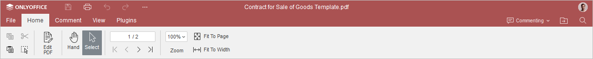
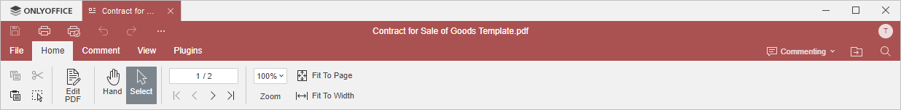
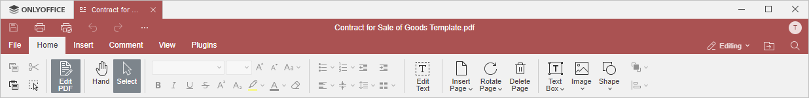
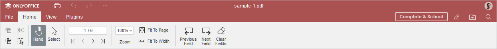
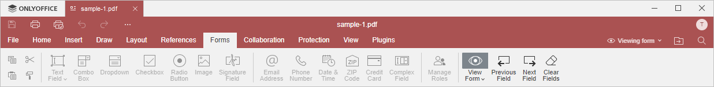

Kartica Početna
Kartica Početna u PDF Uređivaču se otvara podrazumevano prilikom otvaranja PDF dokumenta. Omogućava navigaciju po PDF-u, izbor teksta ili objekata, rotaciju stranica, podešavanje zumiranja, prilagođavanje stranici ili širini, umetanje objekata i osnovne operacije uređivanja.
Odgovarajući prozor u Online PDF Uređivaču:

Odgovarajući prozor u Desktop PDF Uređivaču:

Sledeći režim je dostupan klikom na dugme Uredi PDF na gornjoj alatnoj traci.
Interfejs režima uređivanja PDF-a u Online PDF Uređivaču:

Interfejs režima uređivanja PDF-a u Desktop PDF Uređivaču:

Sledeći režim je dostupan samo za PDF obrasce koji se mogu popunjavati.
Interfejs režima popunjavanja obrasca u Online PDF Uređivaču:

Interfejs režima popunjavanja obrasca u Desktop PDF Uređivaču:

Pomoću ove kartice možete:
Dodatne funkcije dok ste u režimu uređivanja:
- formatirati izabrani tekst, kopirati i obrisati formatiranje, ubaciti liste, poravnati tekst, podesiti razmak između redova, organizovati tekst u kolone,
- ubaciti, obrisati i rotirati stranice,
- ubaciti objekte.
Sledeće opcije nisu prikazane za obične PDF fajlove, dostupne su samo za popunjive PDF obrasce:
- Prilikom popunjavanja PDF obrasca, navigacija kroz polja, brisanje polja, slanje obrasca.